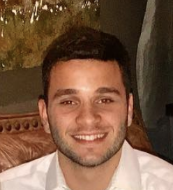

Maxim Fisher
Marketer & Entrepenuer
405 Station 22 Street
Sullivan's Island, SC 29482
About Me
Originally from Charleston, South Carolina, I am currently studying Public Relations and Marketing at the University of Miami. I specialize in strategic communication with a working knowledge of the Adobe Creative Suite as well as digital media marketing. When I am not involved with academics or internships my passions revolve around athletics and branding. While working towards my degree, I am actively searching for professional opportunities within the fields of strategic communications and marketing.

Work Experience
Account Manager at Orange Umbrella Consultancy
- Collaborate across all departments to produce creative marketing initiatives that build
client businesses
- Manage client expectations, timelines, and budgets per project
- Guide the execution of projects from initial kick-off to completion across various
platforms
- Work with strategists and creatives to write creative briefs
- Regularly present work and new business pitches to clients
- Maintain client relationships
- To see our work visit
Orange Umbrella Consultancy
Public Relations Strategist at Orange Umbrella Consultancy
- Write press releases and strategize on public relations needs for clients
- Develop press kit materials, client briefing books, and regional toolkits
- Create and maintain media lists
- Generate creative story angles, identify appropriate journalists/outlets and secure
coverage across all media
- To see our work visit
Orange Umbrella Consultancy
Strategic Communications Intern at South Carolina Area Health Education Consortium
- I devised a communications campaign for the 2018-2019 academic year to recruit
medical students from MUSC into the SCAHEC Scholars Program. The program is a
pipeline that helps diverse students from underserved backgrounds receive
interdisciplinary training and didactic education in exchange for four years of service in
their underserved communities.
- Strategized different marketing initiatives for the SCAHEC Scholars Program including
social media driven marketing.
- To see our work visit
SCAHEC's Website
Education
Bachelor of Strategic Communications at University of Miami
- In addition to a B.S.C, I am currently pursuing minors in Marketing,Interactive Media and
American Studies, and I have maintained a 4.0 GPA throughout my time at UM.
Academic Magnet High School
- During my time at AMHS, I committed two years to developing a thesis on Digital Marketing with a focus on teenage males. In addition to my classroom work I was a twosport
athlete achieving four varsity letters in baseball and three in basketball, and I served as a captain during my senior season.
Skills
Leadership
Communication
Adaptability
Teamwork
Conflict Resolution
Campaign Writing
Account Management
Time Management
Extra-Curricular Activities
Brand Developer, Breakout Performance Gear
- Away from formal work, internships and education I am trying to further better myself
in the fields of branding and digital marketing through creating my own athletic
apparel brand.
- I am learning how to form relationships with manufacturers, drop shipping, budgeting
and social media marketing in the real world.
APP Developer, GreeKnight
- I am learning the business of application development as well as building applications
by starting my own application to fill a gap in Greek Life social networking
Ecommerce Entrepenuer, GripTec
- Currently working on my own dropshipping Ecommerce store with a focus on implementing digital marketing such as Facebook advertisements
Founding Father, Pi Kappa Alpha Fraternity
- One of approximately 80 selected men to found and cultivate the University of Miami's
chapter of the Pi Kappa Alpha fraternity
- Currently serving as a Recruitment Chair on Recruitment Committee
- Currently serving as an Athletics Chair on Athletics Committee
- Currently serving as Brother Leader Educator Chair where I help teach sophomore members how to become better leaders amongst one another, the fraternity, and the community
- Fraternity Involvement
| Cabinet |
Position |
Duration |
| Recruitment |
Recruitment Chair |
One Semester |
| Athletics |
Basketball Chair |
Two Semesters |
| New Member Development |
Brother Leader Educator Chair |
One Semester |
Middle Infielder, University of Miami Club Baseball
References
Ali McMenamin
- MA, Director of Communications from South CarolinaArea Health Education Consortium mcmenamin@musc.edu | 843-792-4981